Я живу в г. Минск, Беларусь. Сейчас мне 28 лет, и я ищу работу в сфере web-разработки.
Если вам нравиться, то что вы видете, вы можете позвонить мне или написать на почту.
Ищете сотрудника в команду?
Привет! Наверняка вам сейчас нужен человек, хорошо разбирающийся в верстке, разработке веб-приложений и интернет-маркетинге. В таком случае у меня есть для вас отличное предложение. Мне очень нравится веб-разработка и сейчас я активно ищу работу в этой сфере. О том, почему вам стоит обратить внимание именно на мою кандидатуру, я расскажу ниже. Приступим?
У меня есть интересный опыт работы
Собственно, мой предыдущий опыт работы действительно интересный и разнообразный. Если кратко подвести черту - мне удалось поработать практически на всех этапах разработки веб-сайтов, от начального брифа до финального тестирования. Ниже я более подробно расскажу о последних 3-х местах работы. Если вам интересно более детальное описание моего профессионального опыта, вы можете скачать мое формальное резюме.
Руководитель группы технической поддержки
Webcom Media
Февраль 2014 - Июнь 2015Работал в компании №1 в Республике Беларусь (по версии marketing.by, CMS Magazine, Рейтинг Рунета), специализирующейся на оказание услуг по консалтингу в сфере интернет-маркетинга.
Прошел путь от аккаунт-менеджера до руководителя группы технической поддержки проектов компании.
Выполнял следующие обязанности:
Руководил группой тех. поддержки в кол-ве 3-6 человек (в разное время), в том числе:
- занимался оперативным руководством, планированием, проработкой услуг, развитием группы, ведением отчетности, распределением премиального фонда;
- участвовал в разработке и внедрении бизнес-процессов, участвовал в разработке и контроле выполнения KPI сотрудниками;
- разрабатывал, и в последующем, контролировал ход стандартизации и оптимизации рабочего процесса для сотрудников группы;
- участвовал в процессе подбора, обучения и мотивации сотрудников группы.
Непосредственно руководил разработкой веб-проектов в качестве проект-менеджера, в том числе:
- занимался постановкой задач по проекту, подбирал проектную команду, контролировал ход работы; создавал проектную, сметную, отчетную и обучающую документации для клиентов компании;
- занимался разработкой и согласованием дизайн-концепций и технологических решений по проектам совместно с техническими специалистами;
- осуществлял контроль качества работ и сроков по проектам.
В качестве аккаунт-менеджера группы технической поддержки выполнял следующие обязанности:
- занимался развитием отношений с клиентами компании, проводил деловые встречи, презентации продуктов и услуг компании;
- осуществлял консультации по внутренним проектам для смежных отделов компании, проводил обучение для сотрудников компании и заказчиков;
- обрабатывал рекламации от клиентов.
Специалист по тестированию web-проектов
A1QA
Ноябрь 2013 - Февраль 2014Работал в компании, специализирующейся на консалтинге в сфере контроля качества программного обеспечения. Успешно закончил обучение в Академии A1Q на курсе по функциональному тестированию.
В качестве специалиста по тестированию web-проектов выполнял следующие должностные обязанности:
- проводил функциональное тестирование;
- подготавливал и актуализировал тестовую документацию, тестовые сценарии;
- вел отчетность, проводил оценку качества по результатам тестирования, анализировал информацию о качестве ПО;
- работал с баг-трекером и таск-трекером на основе Jira, базой знаний Сonfluence, с внутренним ПО и проектной документацией.
Виды тестов, которые я проводил:
- Smoke test/Quick Sanity Check, проверка качества сборки для дальнейшего тестирования;
- Minimal Acceptance Test (MAT, Positive test), тестирование ПО или отдельных его частей на позитивных сценариях;
- Acceptance Test, приемочное тестирование по различным тестовым сценариям;
- New Feature Test (NFT, AT of NF), определение качества нового функционала;
- Defect Validation, проверка результата исправления дефектов, и в том числе, проверка на наличие регрессии;
- Тестирование на соответствие дизайну, базовое тестирование юзабилити
- Кроссбраузерное тестирование;
- Нагрузочное (стресс) тестирование.
Специалист по тестированию web-проектов
A1QA
Август 2012 - Ноябрь 2013Работал в веб-студии №1 Республики Беларусь (по версии marketing.by, CMS Magazine, Рейтинг Рунета). Прошел путь от контент-менеджера до ассистента менеджера проекта.
Выполнял следующие обязанности:
В качестве контент-менеджера и верстальщика:
- подготавливал и добавлял контент на студийные проекты, обрабатывал иллюстрации, занимался корректурой текстов, согласованием материалов с клиентами;
- разработал тестовое задание для контент-менеджеров, участвовал в подборе и обучении новых контент-менеджеров;
- занимался версткой макетов, писал несложные JS-скрипты, анимацию (HTML 4.01/5.0, CSS 2/3, JS, jQuery, Sublime, NetStorm, Emmet, Bootstrap);
- Вносил правки в шаблоны сайта, писал несложный функционал на проектах, разрабатывал локализацию проектов, работал с CMS 1С-Битрикс, DBDrive.
Как специалист по контролю качества (специалист по тестированию):
- занимался разработкой стандартов по тестированию, тестовой документации, шаблонов технических заданий, участвовал в стандартизации процессов веб-разработки;
- проводил всестороннее приемочное тестирование продуктов студии (функциональное, кроссбраузерное, нагрузочное, безопасность, хостинг-окружение);
- участвовал в разработке модуля баг-трекинга, и в его дальнейшем администрировании, распределял задачи по устранению дефектов, проводил валидацию дефектов, вел статистику по контролю качества.
На позиции ассистента проект-менеджера выполнял следующие обязанности
- контролировал процедуру релиза проектов, переезда на хостинг заказчика;
- принимал и обрабатывал сообщения по технической поддержки проектов после релиза;
- консультировал заказчиков по проектам, проводил обучения заказчиков, готовил проектную документации по проекту;
- участвовал в предпродажных презентациях, деловых встречах;
- помогал в организации конференций с участием Студии.
Особенно горжусь участием в следующих проектах:
- Интернет издание о разработке веб-интерфейсов «Frontender Magazine». Я выступал в роли технического редактора проекта, подготавливал статьи проекта к публикации, занимался вычиткой, участвовал в составлении контент-плана. Сейчас я вроде почетного члена редакции.
- Курс "Управление интернет-проектами" от Webcom Media для БГУ. Я выступал в качестве лектора с темами "Веб-разработка", "Разработка корпоративного сайта", "Разработка интернет-магазина" (всего 5 лекций). В рамках данного проекта я читал лекции для студентов БГУ кафедры Маркетинга и отвечал на их вопросы.
- Конференция глав дорожной отрасли СНГ. Я был приставлен в качестве технического консультанта и ассистента при проведении конференции Совета Дорожников СНГ.
Я всегда стремлюсь к новым знаниями
Я считаю, что путь к профессионализму лежит через непрерывное обучение. И если честно, мне нравится учится, мне нравится сам процесс постижения чего-то нового. И в этом плане веб-разработка и маркетинг – идеальные области, так как всегда есть к чему стремиться и в чем совершенствоваться.
Мое первое образование - технический редактор
Да, я верстал еще до того, как это стало модным. Правда, я верстал газеты и журналы, но общие принципы те же. В конце-концов, кернинг, кегль, обтекание текстом и хороший глазомер равнозначно применимы и в верстке сайтов.
Мое второе образование - маркетолог-экономист
Когда я поступал в ВУЗ, я искренне думал, что меня там научат маркетингу. Вышло немного не так, как я рассчитывал. На зато теперь по некоторым темам маркетинга я могу сам преподавать (и преподаю). И именно в вузе я понял, что хотел бы более полноценно заниматься веб-разработкой.
К сожалению, знания, которые я получил через «официальные» институты образования, лишь отчасти применимы в интересующей меня сфере веб-разработки. Единственный путь получения знаний в этой профессии - регулярное самообразования.
Я понимаю, как держать свой мозг в в тонусе, и постоянно читаю литературу, тематические блоги, прохожу курсы повышения квалификации и сертификацию. Ниже я представил далеко не полную своих достижений в профессиональном образовании.
- 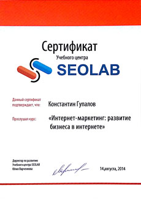 Курс «Интернет-маркетинг: развитие бизнеса в интернете», учебный центр «Seolab», 2014 г.
- 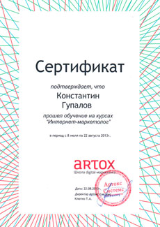 Курс «Интернет-маркетолог», учебный центр «Artox», 2013 г.
- 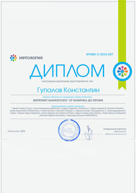 Курс «Интернет-маркетолог: от новичка до профи», центр «Нетология», 2013 г.
- Курс «Администратор: Базовый», 1С-Битрикс, 2012 г.
- 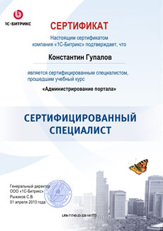 Курс «Администратор портала», 1С-Битрикс, 2012 г.
- 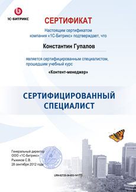 Курс «Контент-менеджер», 1С-Битрикс, 2012 г.
- 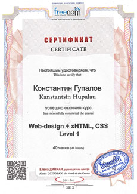 Курс Веб-дизайн «HTML / CSS» 1-й уровень, УО «Freedom» 2012 г.
- 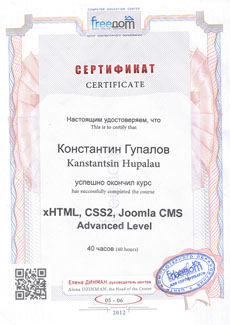 Курс Веб-дизайн «HTML / CSS / СMS» 2-й уровень, УО «Freedom» 2012 г.
- Курс «HTML / CSS», УО «Интуит» 2013 г.
- 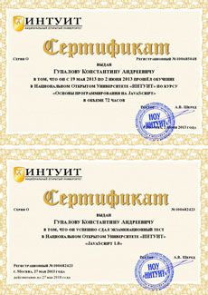 Курс «JavaScript», УО «Интуит» 2013 г.
- 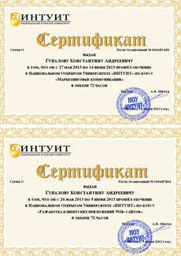 Курс «Интернет-маркетинг», УО «Интуит» 2013 г.
{kind=link}
{kind=link}
{kind=link}
{kind=link}
{kind=link}
{kind=link}
{kind=link}
{kind=link}
{kind=link}
{kind=link}
Я не планирую останавливаться. На очереди - Angular JS, JS-backend фреймворки, веб-компенты, Shadow-DOM, веб-аналитика и много других интересных тем.
И конечно, я регулярно стараюсь участвовать в профильных конференциях, таких как «Неделя Байнета», «Деловой Интернет», «Федеральный семинар 1С-Битрикс», FrontEnd Dev Conf.
- 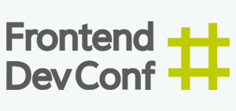
- 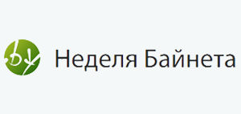
Как бы я оценил себя
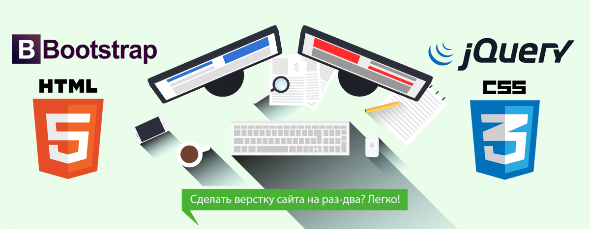Тяжело оценивать свои знания и умения объективно. Все люди хотят казаться лучше, чем они есть. Но, ниже я попробую это сделать, наглядно и честно.
-
HTML5 / CSS3
Я довольно хорошо владею этими технологиями. Могу уверенно верстать на HTML5 и СSS3, кроссбраузерно, валидно и семантично. Могу использовать для этого Bootstrap. Сейчас планирую попробовать технологию Веб-компонентов, Shadow-DOM, LESS / SASS.
-
jQuery / JavaScript
Написание простого скрипта анимации и интеграция плагинов для меня не составляет труда. Однако, мне не хватает каждодневной практики в JavaScript. Я планирую восполнить этот пробел в самое ближайшее время.
-
Adobe Creative Suite
Я вполне хорошо владею программами Adobe (для не-дизайнера). Этот сайт - веское тому доказательство. Все графическое оформление создано мною для этого сайта в Photoshop и Illustrator.
-
Интернет-маркетинг
Мой козырь в рукаве. Я обладаю довольно обширными знаниями в этой сфере. И если я буду верстать для вас, я буду думать не только о красоте своей работы, но и о ее потенциальной эффективности с точки зрения маркетинга, и о ее удобстве для конечного пользователя.
-
Тестирование веб-приложений
Я стараюсь самостоятельно контролировать качество своей работы, и в этом мне помогают знания процесса тестирвоания. Способен написать подробные тест-кейсы и ручками их все проверить.
Мое портфолио
Если честно, у меня довольно слабое портфолио. Мой самый крутой проект сейчас перед вами. Об остальных, не менее интересных проектах я раскажу ниже.
{kind=link}
{kind=link}
{kind=link}
Немного подробнее об этом проекте
В этом проекте я оторвался по полной. На всех фишках подробнее останавливаться не будем, их можно изучить в исходниках по ссылке. Ниже я чуть подробнее расскажу о концепции и ключевых особенностях.
 много кода и кофе...
много кода и кофе...
- Это сайт с правильным адаптивом. Он не только корректно отображается на мобильных устройствах, благодаря пресловутому Bootstrap 3. Для разных типов экранов разное оформление и разный набор UI. Я даже сделал отдельные иконки для популярных мопбильных устройств
- Я внедрил семантичную разметку с помошью HTML5, Schema и Open Graph. И если вы захотите поделится ссылкой на мой сайт через социальную сеть, появится вот такой сниппет
- Дизайн. Мне кажется, я очень удачно подобрал цветовую гамму, иллюстрации, элементы интерфейса. Получилось ровно так ккак я и хотел, позитивно и свежо.
- Добавим ко всему этому спецэффекты и интерактив на скриптах и CSS3. На странице постоянно что-то происходит в области видимости. Надеюсь, у меня получилось заинтересовать вас и удержать ваше внимание?
- И напоследок, самый трудный для меня элемент - контент. Все это было бы впустую, если бы я добавил скучные, сухие и формальные тексты. Надеюсь, вы простите мне мой вольный стиль изложения. Ну а для любителей форманльностей опять жей есть мое формальное резюме.
Краткий FAQ для HR-менеджера
Я ценю ваше и свое время. Ниже постараюсь кратко ответить на самые очевидные и популярные вопросы, которые могут у вас возникнуть ко мне.
-
Почему вы начали заниматься вёрсткой?
Мне правдо нравилась полиграфическая верстка. И однажды один мой знакомый показал, как он делает сайт в Dreamweaver. В тот момент я подумал, что это очень похоже на то, что я делал раньше. Начал читать, пробовать и ну и как-то все само завертелось.
-
Почему вы ушли с передыдушего места работы?
Причин на самом деле много. Пожалуй, основная - мне было чертовски скучно делать то, что я делал. Ну и еще я слегка разочаровался в белоруском интернет-маркетинге.
-
Кем вы видите себя через 3-5 лет?
В основном - хорошим frontend инженером. Ну и счатстливым отцом двоих детей.
-
Ваши сильные / слабые стороны?
Сильные - хороший технический бэкрауд, отличные коммуникативные сопосбности, тяга к познанию нового.
Слабые - ну я довольно требователен к своей работе, это иногда выливается в чересчур долгую полировку мелочей и деталей.
Наверняка у вас осталась еще много вопросов ко мне
Отлично! Давайте обсудим их на собеседовании. Я готов встретиться с вами в любое удобное для вас время. Свяжитесь со мной по контактам, указанным ниже.